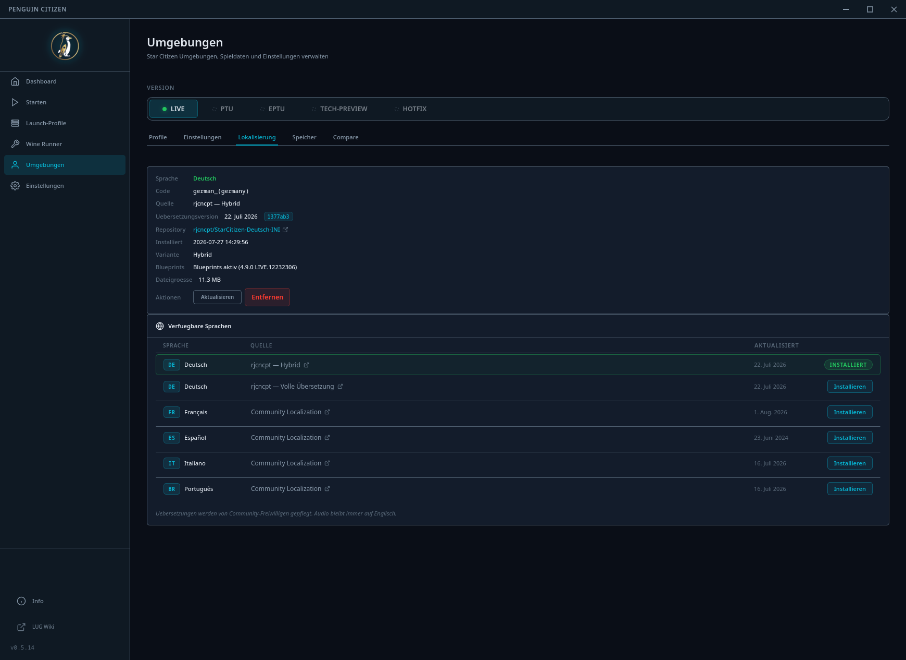

Lokalisierung
Community-gepflegte Sprachpakete installieren, um Star Citizen in deiner bevorzugten Sprache zu spielen.

Aktueller Status
Der obere Bereich zeigt dein aktuell installiertes Sprachpaket (falls vorhanden), einschliesslich:
- Sprachname
- Commit SHA (Versionskennung)
- Installationsdatum
- Update-Indikator - zeigt an, ob eine neuere Version verfuegbar ist
Verfuegbare Sprachen
Unterhalb des Status wird eine Liste herunterladbarer Community-Sprachpakete angezeigt. Jeder Eintrag zeigt:
- Sprachname und Quell-Repository
- Installieren-Button fuer noch nicht installierte Sprachen
- Aktualisieren-Button, wenn eine neuere Version verfuegbar ist
- Entfernen-Button fuer installierte Sprachen
Der Fortschritt wird waehrend Installation und Aktualisierung angezeigt.
Bauplan-Markierungen
Star Citizen vergibt bei bestimmten Missionen Bauplaene als Belohnung, verraet im Missionstext aber nicht, bei welchen. Penguin Citizen kann diese Information beim Installieren einer Uebersetzung mit einbauen: Im Installationsdialog gibt es dafuer die Option Bauplan-Markierungen einfuegen.
Ist sie aktiv, erhalten betroffene Missionen
- eine Markierung im Titel -
[BP]oder[BP?] - einen Block am Ende der Beschreibung mit den moeglichen Bauplaenen, der benoetigten Reputation, der Fraktion und dem Cooldown
Was die Markierungen bedeuten
[BP] heisst: Die Mission zieht sicher aus einem Bauplan-Pool. Das ist nicht dasselbe wie „du bekommst garantiert diesen einen Bauplan" - welcher Bauplan faellt, haengt vom Pool, deiner Reputationsstufe und der Region ab. [BP?] steht fuer Missionen, bei denen schon die Ausschuettung selbst eine Chance ist; der angegebene Prozentwert im Block nennt sie.
Woher die Daten kommen
Die Zuordnung Mission zu Bauplan wird aus den Spieldateien selbst gewonnen und liegt in einem eigenen Repository: penguin-citizen-blueprints. Namen von Raengen, Fraktionen und Gegenstaenden werden gegen die von dir installierte Uebersetzung aufgeloest - der Block erscheint also in der Sprache deines Sprachpakets.
Wenn eine Versionsmeldung erscheint
Die Daten gehoeren immer zu einem bestimmten Spiel-Build. Hakst du die Option an, prueft Penguin Citizen, ob fuer deine installierte Version Daten vorliegen, und meldet eine Abweichung:
„Die Bauplandaten stammen aus Spielversion X, installiert ist Y. Die Markierungen koennen unvollstaendig sein."
Das ist kein Fehler, sondern ein Hinweis: Nach einem Star-Citizen-Patch dauert es, bis die Daten nachgezogen sind. Die Installation laeuft trotzdem durch, und Missionen, die es in beiden Versionen gibt, werden korrekt markiert. Nur neue oder umbenannte Missionen fehlen dann.